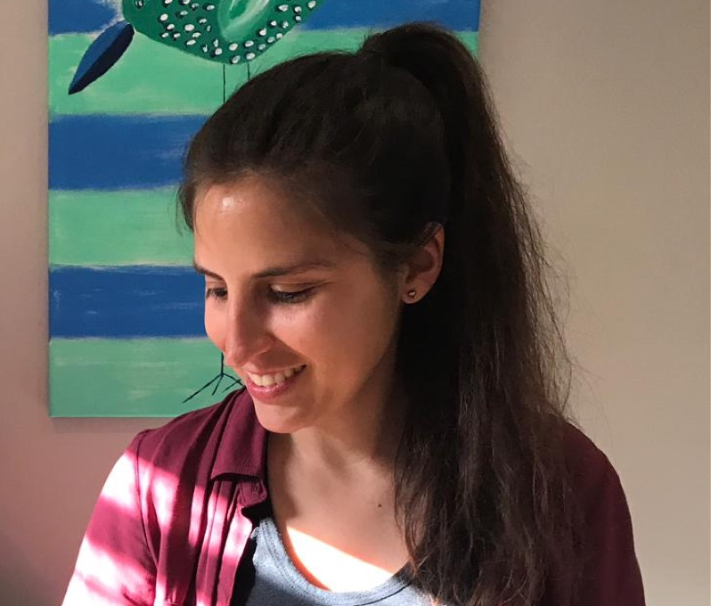

About

I’m a former graphic designer who found a much more challenging job in the software industry. I'm passionate about helping others through design. I enjoy being a big-picture thinker and working on products end to end, from ideation all the way to development.Outside my 9 to 5, I love to travel: it fills me with incredible experiences, culture, and landscapes. I also have two freelance projects: one is getting bigger (around 1000 active users), and the other one is stable and growing very slowly since 2016.